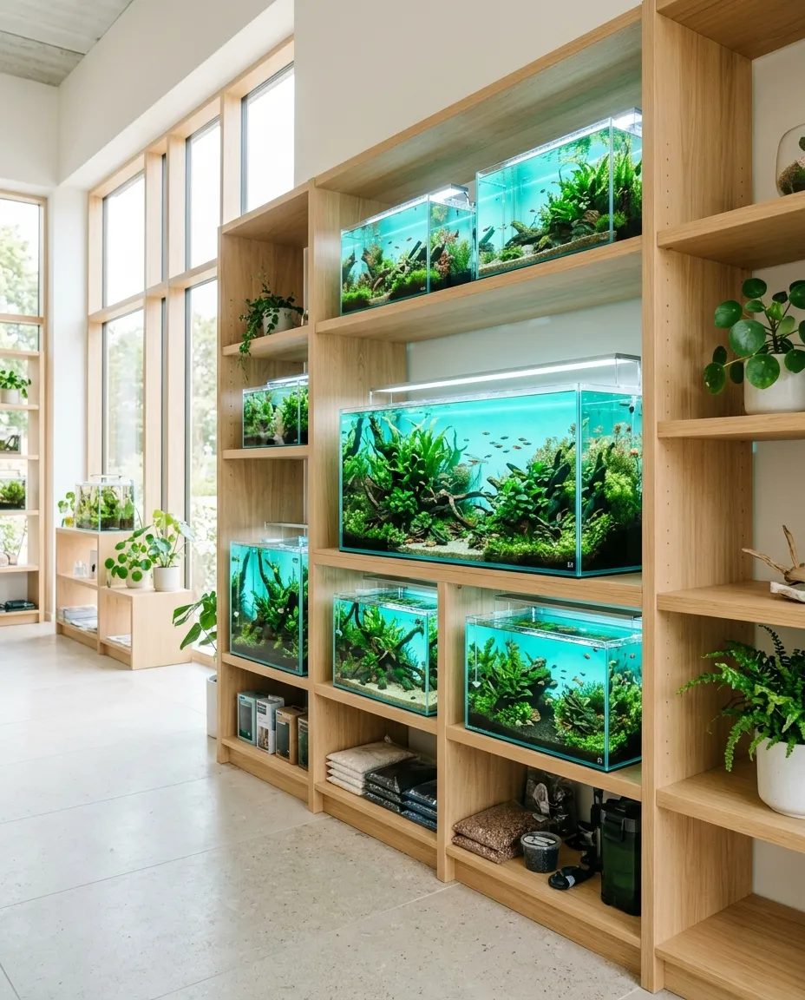
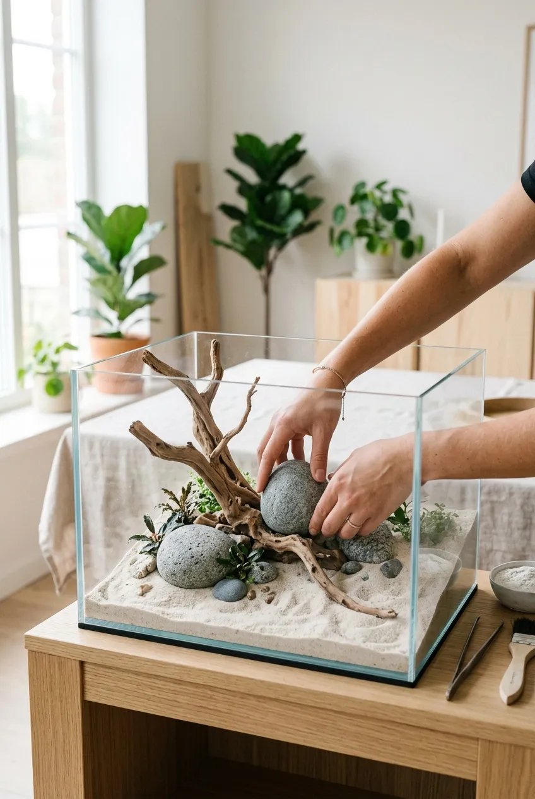
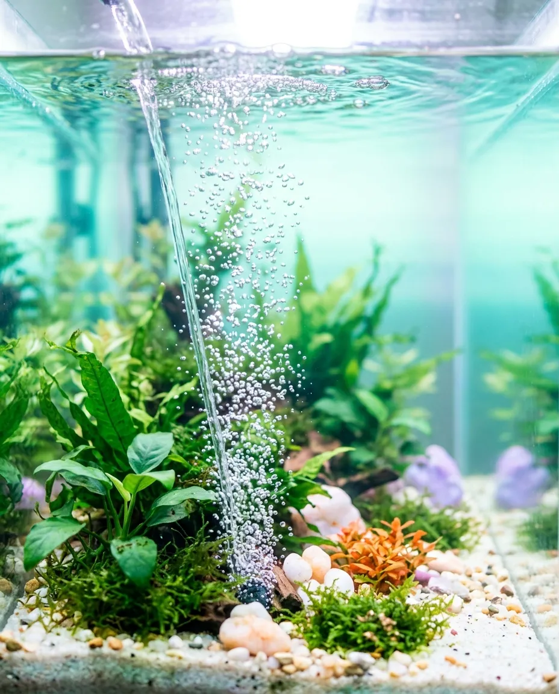
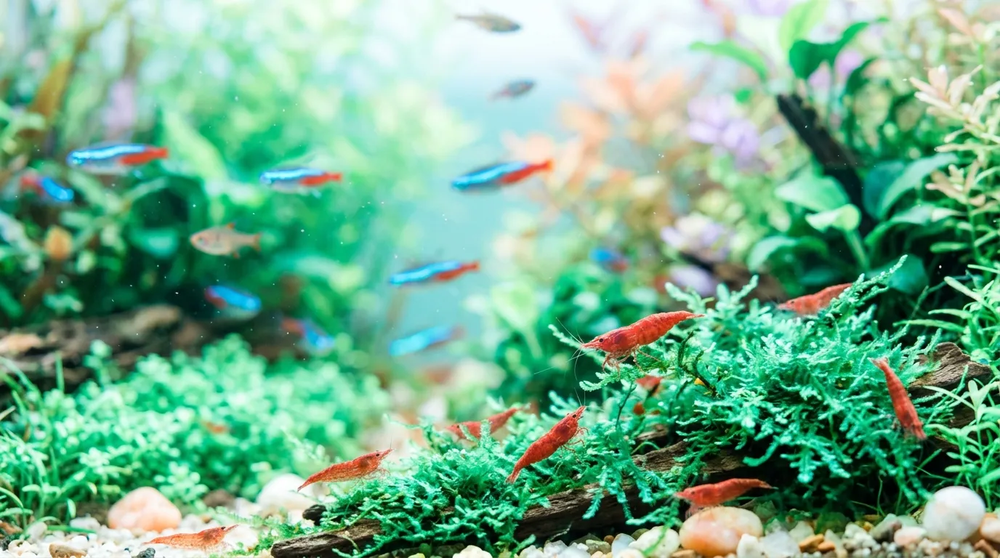
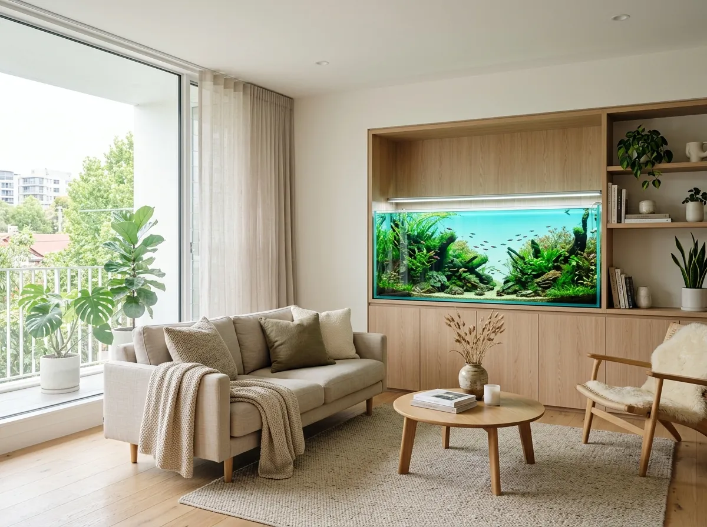
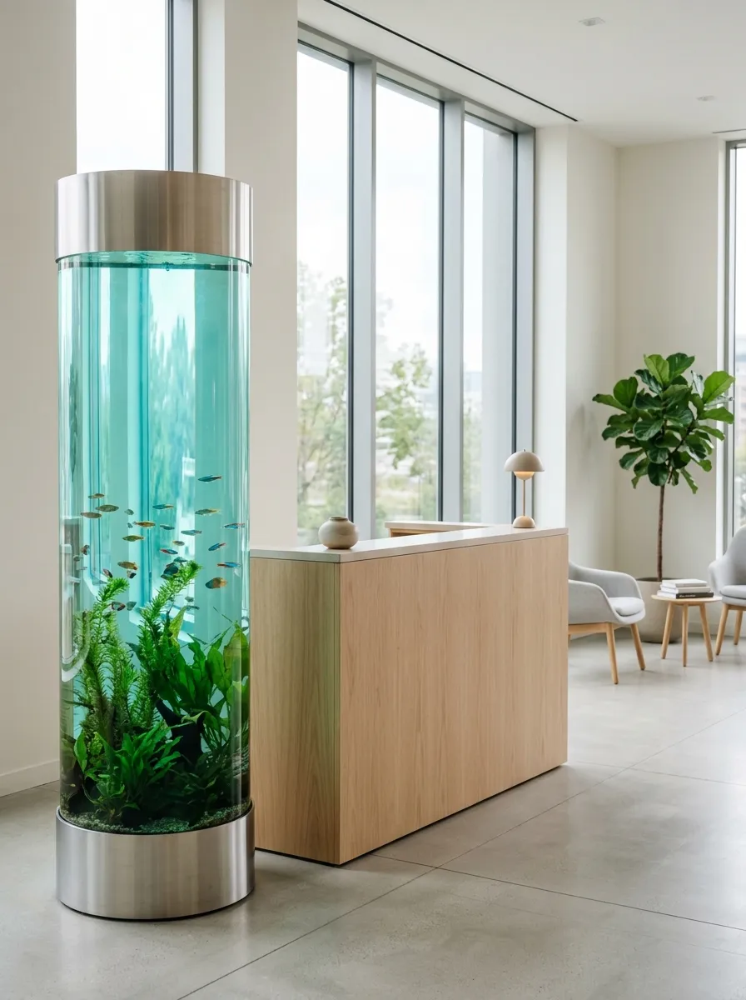
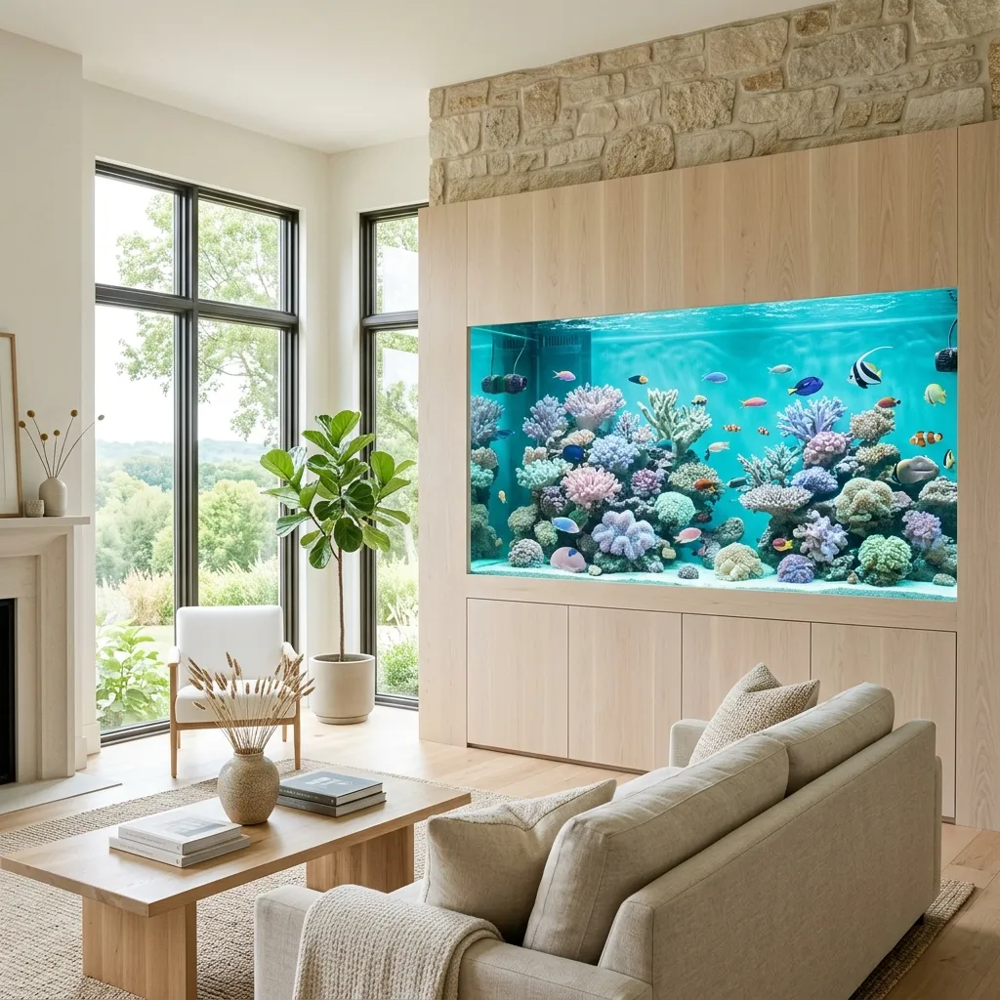

Подберём
Объём, место и обитателей — под ваш дом, офис или частный дом.
Живые рыбы, морские кораллы и всё для аквариума — в одном зале в Чебоксарах.
Вниз, к рифуРыб, креветок и кораллы можно рассмотреть вживую, прежде чем выбрать.
Кораллы, морские рыбы и рифовые системы. То, чего нет в обычном зоомагазине.
Расскажем, с чего начать риф и как его держать.

Объём, место и обитателей — под ваш дом, офис или частный дом.

Фильтр, свет, обогрев, грунт и декор, которые работают вместе.

Подскажем, как подготовить воду и когда заселять рыб.

Приходите с вопросами. Продавцы — сами аквариумисты.


